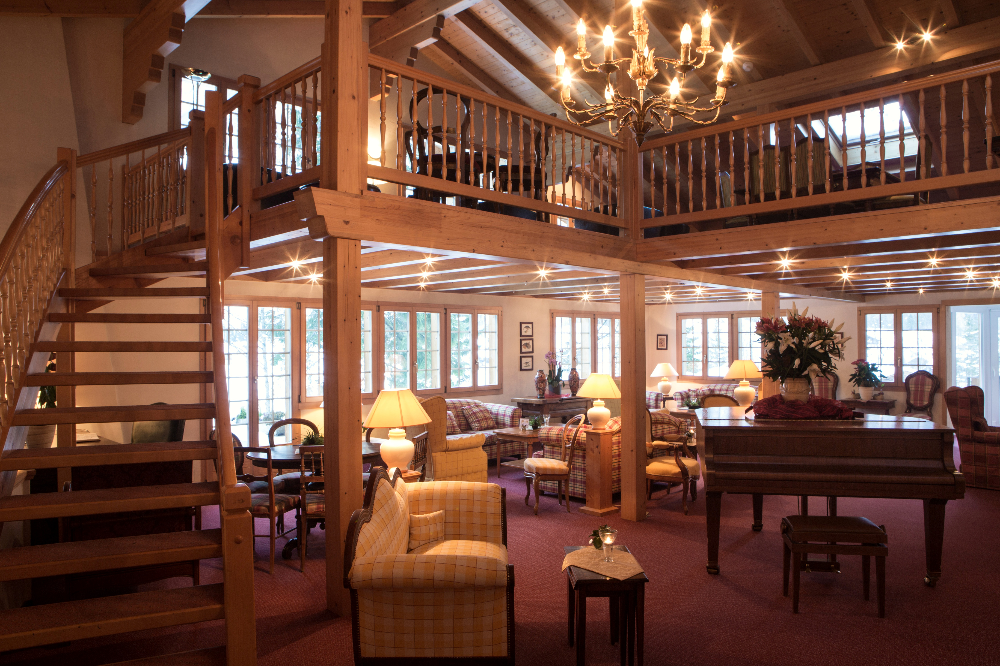
Das Haus.
Halle, Galerie und Flügel
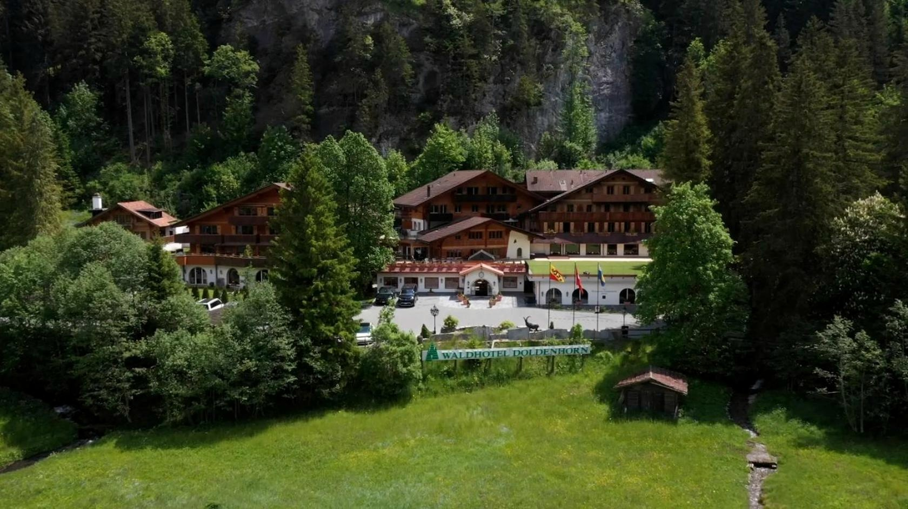
1976
Im Jahr 1976 hat die Familie Maeder die kleine Pension Doldenhorn erworben.
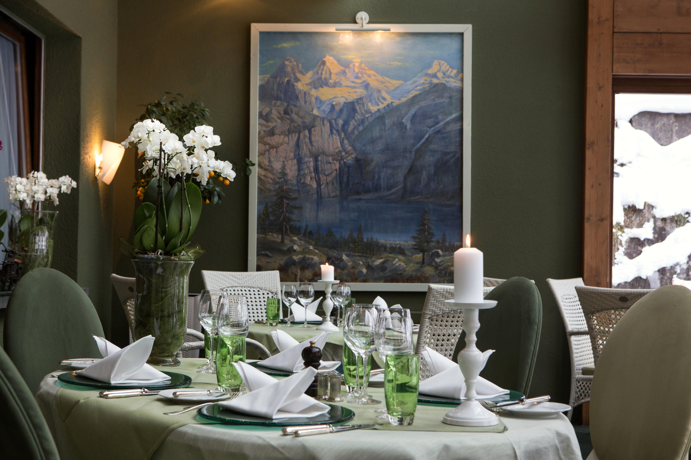
Die Tafel.
Restaurant Doldenhorn
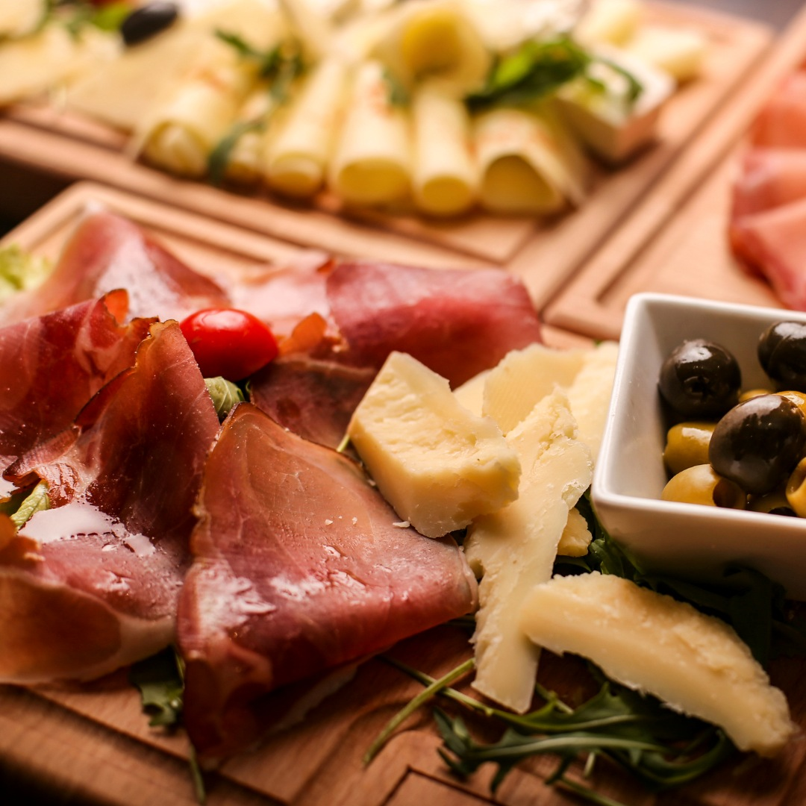
5
Menüs jeden Abend zur Auswahl: drei im Doldenhorn, zwei im Landgasthof Ruedihus.
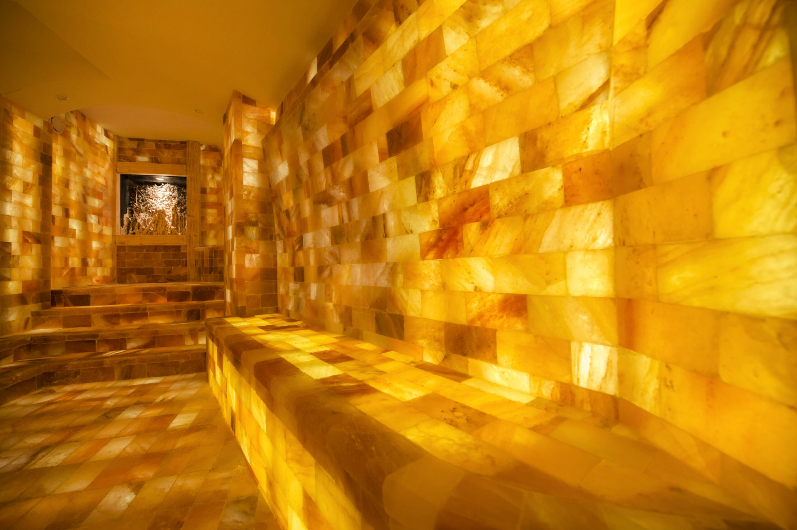
Das Spa.
Salzarium
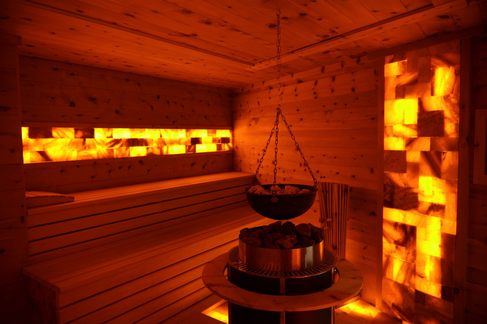
90°C
Grad in der klassischen finnischen Sauna. In der Arven Bio Sauna sind es etwa 65 °C.
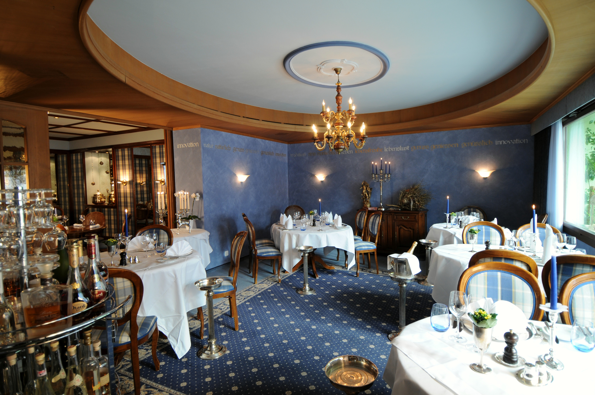
Zu Gast.
Salon bleu
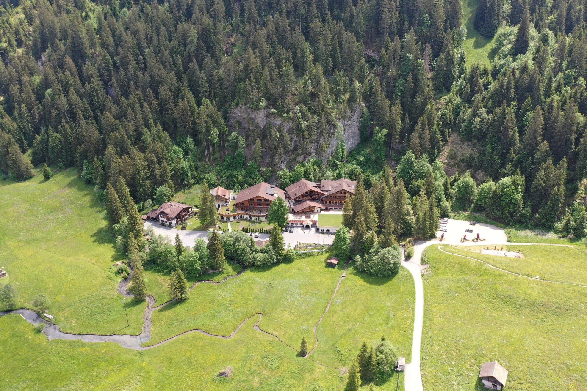
2016
Seit 2016 sind wir Mitglied von Relais & Châteaux.
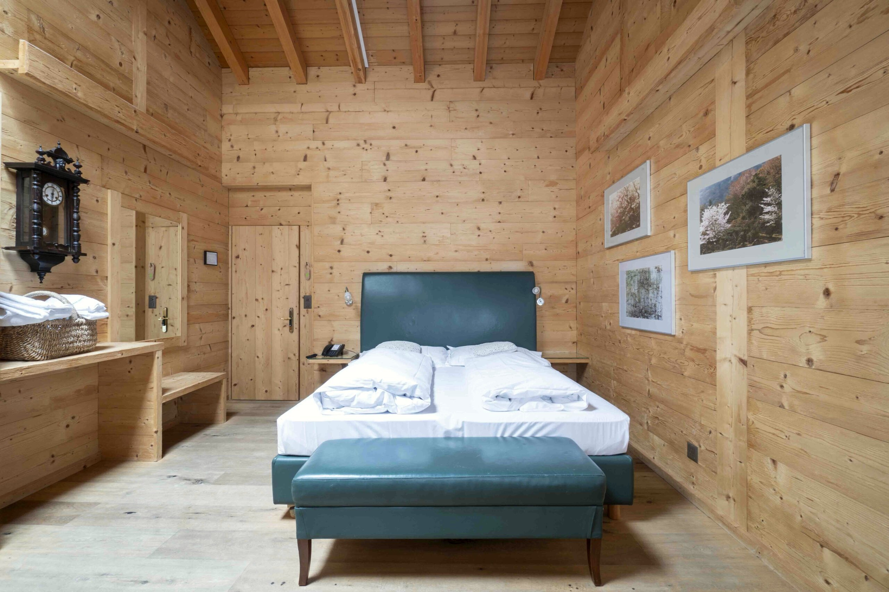
Die Zimmer.
Economy-Zimmer
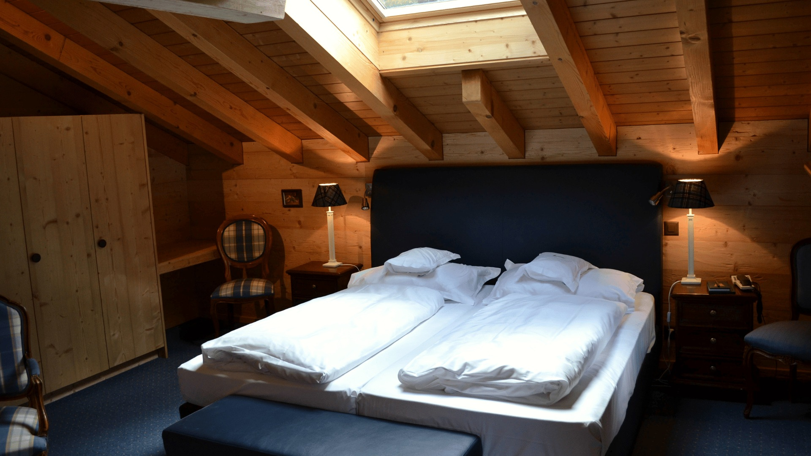
50m²
Quadratmeter für zwei oder drei Gäste: die Junior Suite, mit Aussicht, Balkon und Whirlpool.
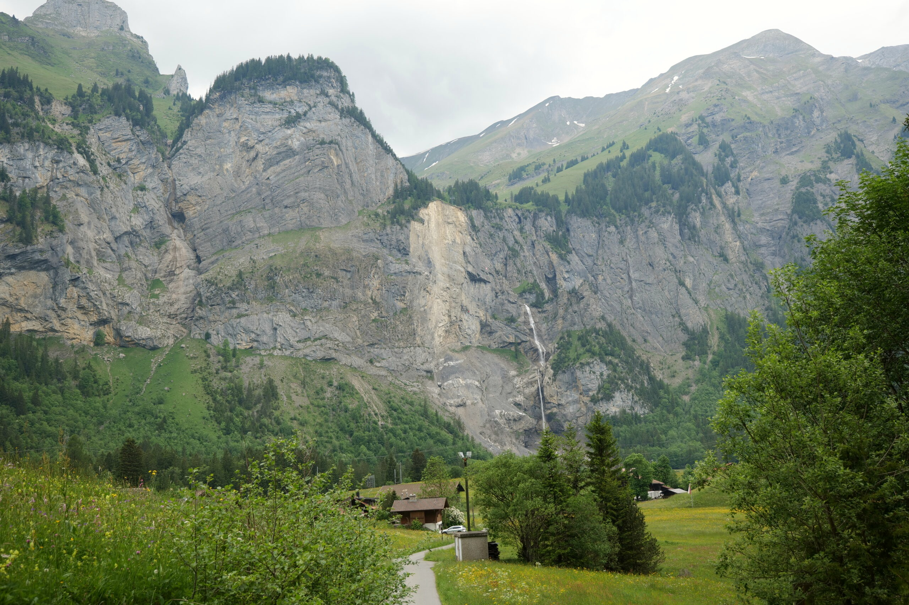
Das Tal.
Kandersteg
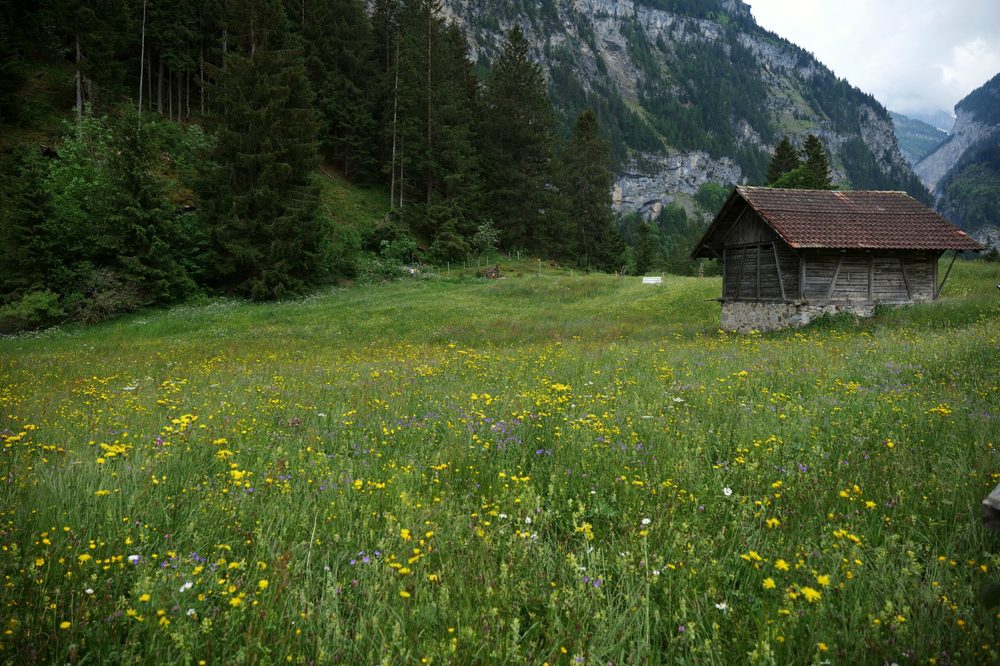
300m
Meter abseits der Hauptstrasse, mitten in einem schönen Naturpark.
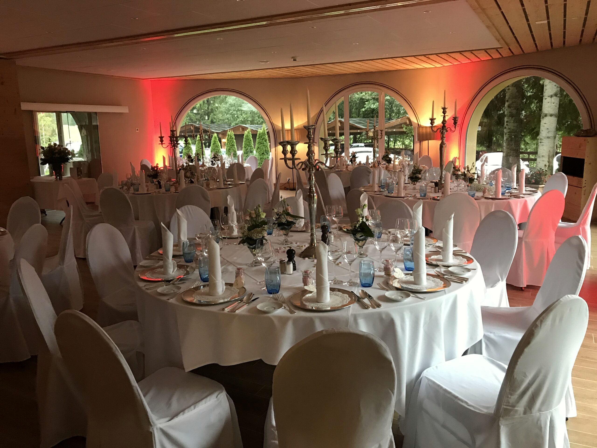
Die Feste.
Hochzeiten und Bankette
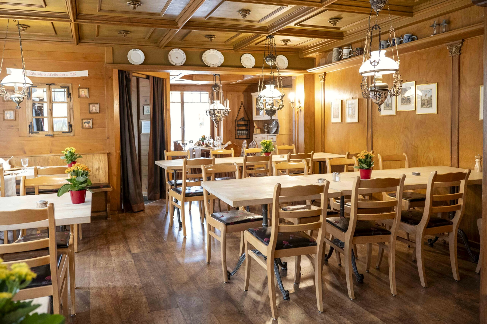
34
Plätze in der Burestube: ein Fest im eigenen Raum, unter Holztäfer.